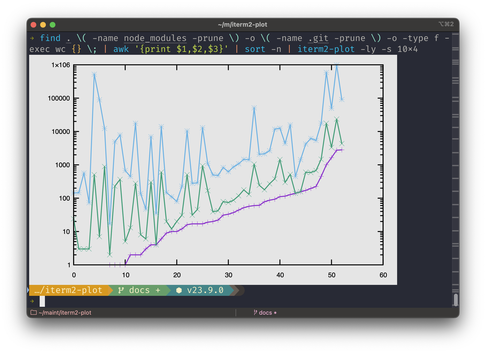

iterm2-plot - v1.0.2
iterm2-plot
Plot datapoints to stdout inside your iTerm2 window on MacOS.
Installation
npm install -g iterm2-plot
Example
This shell fragment will find all of the files in the current directory tree, find their line, word, and character counts, remove their file names, sort them by number of lines, then plot them into the current terminal window with a logarithmic y scale so that the widely-disparate line and character counts will show up interestingly on the same graph.
find . \( -name node_modules -prune \) \
-o \( -name .git -prune \) \
-o -type f -exec wc {} \; | \
awk '{print $1,$2,$3}' | \
sort -n | \
iterm2-plot -ly

Command Line Options
Usage: iterm2-plot [options] [files...]
Arguments:
files File to read from, or "-" for stdin (default:
["-"])
Options:
-b, --background <colorName> Background color name or #6hexdig (default:
"gray90")
-d, --dimensions <WxH> Width x Height in pixels. 0 reads from the
terminal. (default: "0x0")
-l, --log <axes> Set X, Y, and/or count to log scale (choices:
"x", "y", "xy")
-o, --output <filename> Output svg to file instead of chart on stdout
-s, --shrink <CxR> Shrink output by columns or rows (default:
"1x3")
-x Treat first column as X for all following Y
columns (default: use row count)
-h, --help display help for command
Each file will be plotted as a separate set of lines. If a blank line exists
in a file, a new set of lines will be started at that point. Use cat to
combine files if needed.
File chunks will be processed according to gnuplot rules, with all defaults taken.
API
Full API documentation is available. No use cases are anticipated for this API, but it will remain stable according to semver rules.